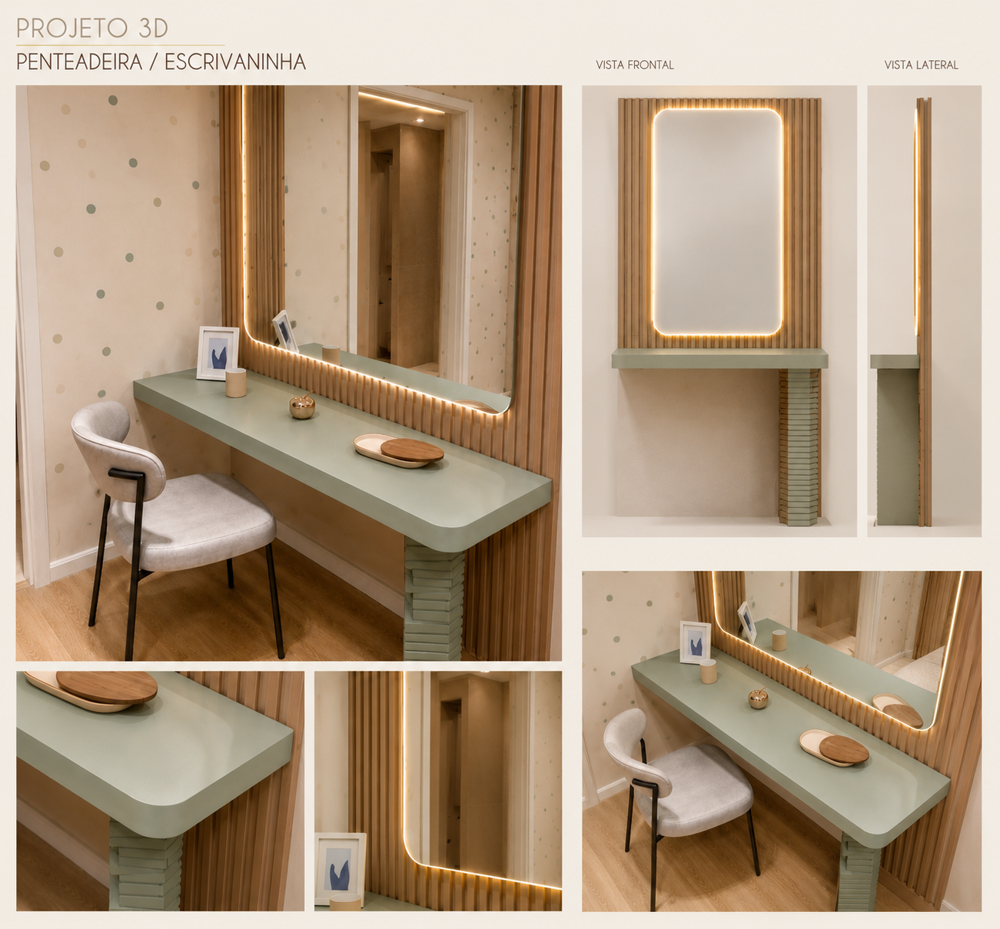
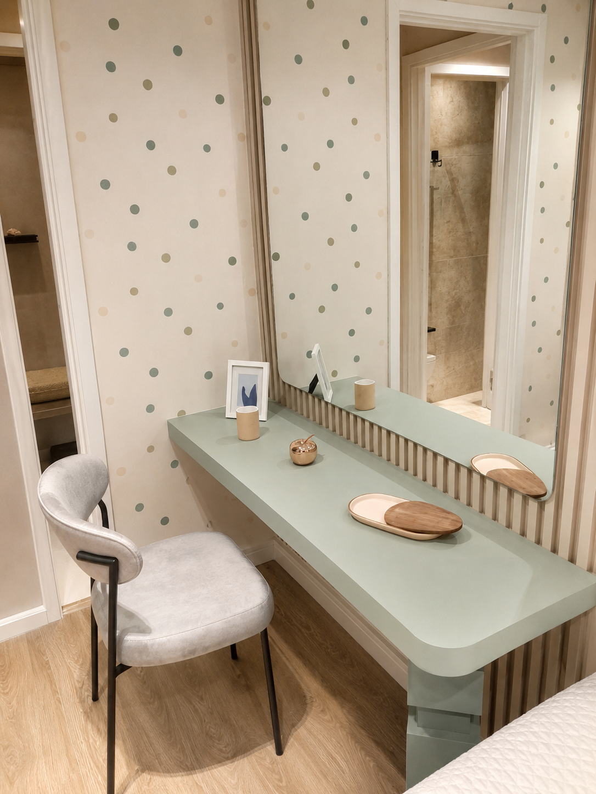

Jonathan Duarte
Marceneiro EspecialistaMarceneiro experiente focado no acabamento fino e detalhista, transformando projetos complexos em realidade. Apaixonado pelo ofício, pai orgulhoso e apaixonado por móveis.
TUDU DIMADEIRA • Marcenaria
Marcenaria de alto padrão sob medida em Osasco, SP e região. Projetos 3D exclusivos e móveis planejados que valorizam cada centímetro do seu ambiente.
A Tudu DiMadeira nasceu da paixão compartilhada pela marcenaria artesanal, gosto muito de móveis, pois eles contam histórias e otimizam espaços. Com atuação principal na região de Osasco e arredores, dedicamo-nos a criar peças únicas que unem estética impecável e máxima funcionalidade.
Entendemos que um móvel sob medida não é apenas uma caixa de madeira; é a realização de um sonho, a otimização do seu lar ou escritório. Por isso, trabalhamos com materiais de primeira linha (MDF de alta densidade, madeiras nobres, ferragens premium) e garantimos um acabamento minucioso em cada detalhe.
Atendimento personalizado desde o primeiro contato até a montagem final na sua casa.
Marceneiro experiente focado no acabamento fino e detalhista, transformando projetos complexos em realidade. Apaixonado pelo ofício, pai orgulhoso e apaixonado por móveis.

Especialista em projetos 3D e soluções de otimização de espaço, garantindo funcionalidade antes do corte. Marceneiro técnico, pai dedicado e entusiasta de ferramentas.
Antes do primeiro corte na madeira, você recebe uma representação visual do seu móvel para aprovação.

Cada ambiente começa com uma ideia. Criamos uma representação visual para que você possa imaginar o resultado e visualizar como a peça se integra ao seu espaço.

Da ideia à realidade: uma peça criada para fazer parte do ambiente, com acabamento cuidadoso e presença que transforma o espaço.
Explore alguns dos trabalhos recentes. Clique nas imagens para expandir e usar as setas de navegação para ver todas as fotos de cada projeto.


Atendemos toda a região de Osasco e Grande São Paulo. Entre em contato através das plataformas abaixo para conversarmos sobre suas ideias. Elaboramos o projeto 3D para sua avaliação.
Nossa paixão pela marcenaria despertou em 2012, nas oficinas da região de Osasco. O que começou como um fascínio pelas texturas da madeira e pelos encaixes perfeitos, rapidamente se tornou a vocação de uma vida.
Trabalhando lado a lado com mestres do ofício, aprendemos que um bom móvel exige mais do que apenas técnica.. exige alma. Ao longo dos anos, unimos a sabedoria artesanal tradicional com as mais modernas ferramentas de design e modelagem 3D.
Hoje, como profissionais dedicados com assinatura própria, a equipe Tudu DiMadeira dedica-se a entregar não apenas armários ou escrivaninhas, mas soluções inteligentes e elegantes que abraçam a rotina de cada cliente, garantindo durabilidade e um acabamento que impressiona em cada detalhe.
"A excelência está nos detalhes que ninguém vê." — Tudu DiMadeira